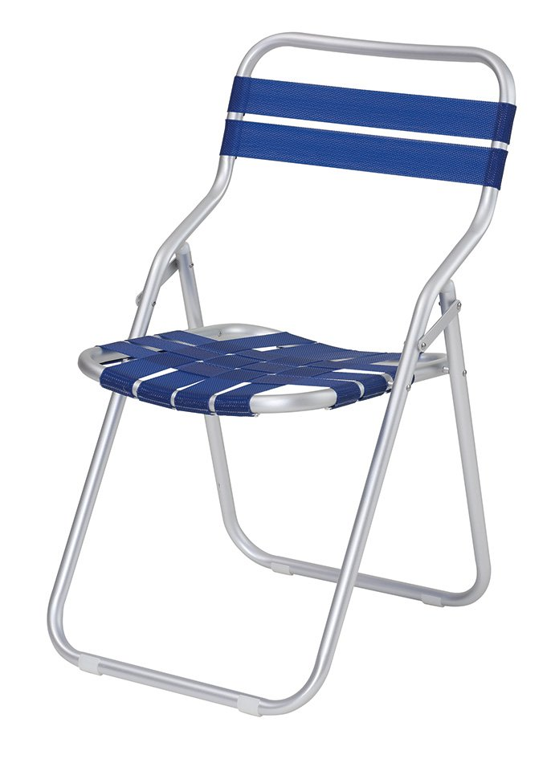

<div class="qv-media">
            <div class="qv-main">
            
        </div>
            </div>

<div class="qv-body">
            <p class="qv-cat">Rope / Strap ＆ Sling</p>
    
    <h2 class="qv-name" id="qvTitle">
                F101    </h2>

            <p class="qv-type">Side Chair</p>
    
    <div class="qv-meta">
                    <p class="qv-price">
                ¥17,000<span class="qv-price-note">（税別）</span>            </p>
                            <p class="qv-stock">
                <span class="pcx-dot" style="background:#A3E635"></span>
                限定品            </p>
            </div>

            <p class="qv-desc">ベルトの耐久性と耐候性強化を徹底追及した信頼と実績あるモデルです。</p>
    
            <dl class="qv-spec">
                            <dt>サイズ</dt>
                <dd>W450 / D540 / H770 / SH390</dd>
                            <dt>重量</dt>
                <dd>1.7kg</dd>
                            <dt>素材</dt>
                <dd>フレーム：アルミアルマイト仕上<br />
シート：ベルト張り（サランベルト）<br />
バック：ベルト張り（サランベルト）</dd>
                            <dt>カタログページ</dt>
                <dd>P.239</dd>
                    </dl>
    
    
    <div class="qv-actions">
        <a class="qv-more" href="product-99.html" data-no-quickview>
            詳細ページを見る <span aria-hidden="true">→</span>
        </a>
            </div>
</div>
